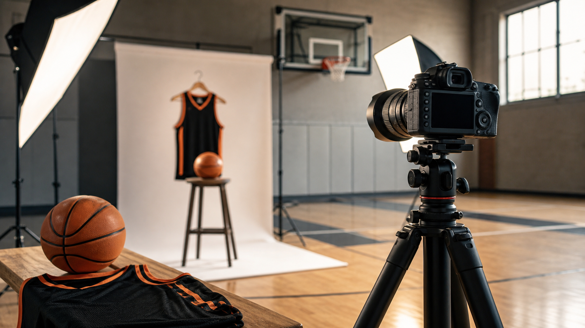

Am Samstag, dem 13. Juni 2026, veranstalten die NBC Baskets einen Media Day für ihre Spieler. Bei einem professionellen Fotoshooting werden aktuelle Porträtfotos und Actionbilder entstehen – ein wichtiger Baustein für die Präsentation der Teams im Verein, auf der Website und in den sozialen Medien.
Was uns erwartet?
Spielerinnen und Spieler werden von einem Fotograffen individuell abgelichtet. Neben klassischen Porträts im Vereinsshirt sollen auch spielnahe Motive entstehen. Die Bilder dienen unter anderem für:
- Spielerprofile auf der NBC-Website
- Social-Media-Posts und Teambekanntgaben
- Anschlagen und Vereinspräsenz
Infos für Spieler und Eltern
Weitere Details – darunter Ablauf, Uhrzeit und Treffpunkt – werden von den jeweiligen Coaches direkt mitgeteilt. Wer Fragen hat, melde sich bitte beim Trainer der eigenen Mannschaft.
Hinweis
Änderungen am Ablauf bleiben vorbehalten. Weitere Updates gibt es dirket über die Teamspeak-Kanäle und die Trainer.